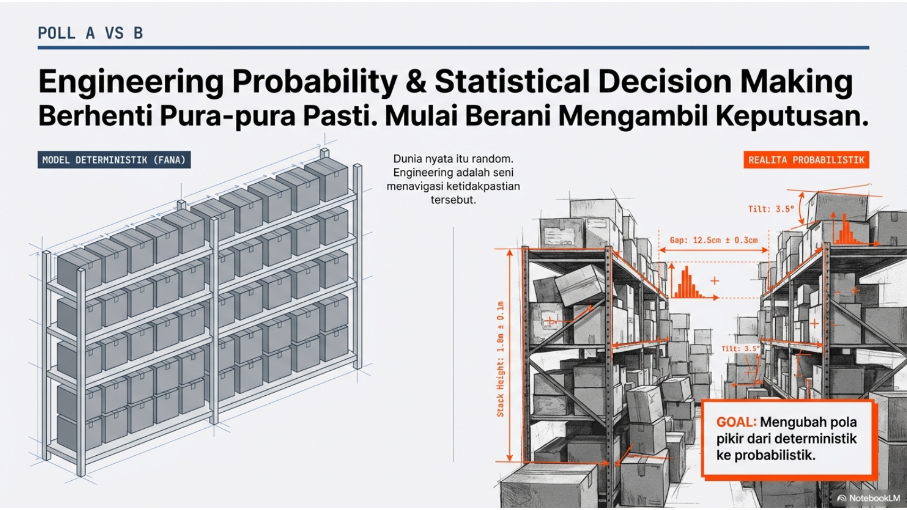
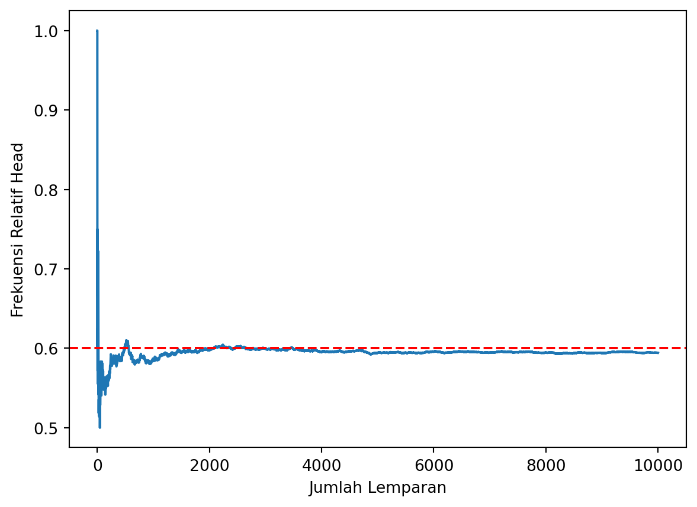
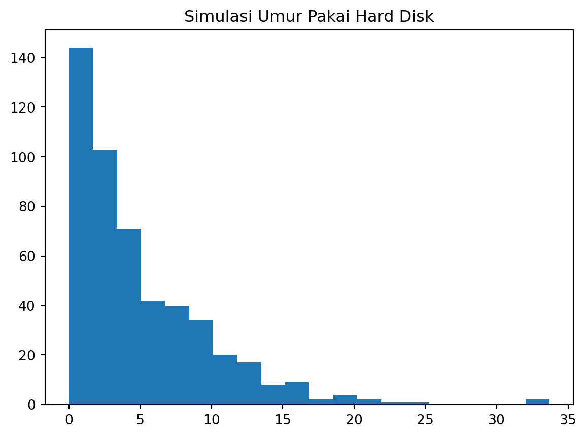

import numpy as np
import pandas as pd
# Konfigurasi Simulasi
np.random.seed(42) # Agar hasil konsisten saat dijalankan ulang
days = 30
average_demand = 100
std_dev_demand = 20
initial_stock = 150
order_quantity = 100 # Jumlah stok yang dipesan jika stok rendah
reorder_point = 50 # Batas stok untuk memesan ulang
# Biaya-biaya
holding_cost_per_unit = 2 # Biaya gudang per unit sisa
stockout_cost_per_unit = 10 # Biaya kehilangan pelanggan per unit habisMinggu 01: Pola Pikir Probabilistik vs Deterministik
Understanding Probabilistic Way of Thinking versus Deterministic Way of Thinking

Apa yang Kita Pelajari?
Memahami bahwa dalam dunia nyata, fenomena seringkali mengandung ketidakpastian (randomness) dan tidak dapat diprediksi dengan kepastian mutlak (deterministik), sehingga memerlukan kerangka kerja matematika untuk mengukur ketidakpastian tersebut.
Tipikal Problem Sebuah toko ingin menentukan stok barang. Pendekatan deterministik mengasumsikan permintaan konstan (misal: pasti 100 unit), sedangkan realitanya permintaan berfluktuasi secara acak.
Solusi & Pengambilan Keputusan Menggunakan model probabilistik untuk menghitung peluang terjadinya berbagai tingkat permintaan, sehingga manajer dapat menentukan level safety stock yang optimal untuk meminimalkan risiko kekurangan stok tanpa menimbun barang berlebihan. Disini sumber random adalah permintaan harian
Eksplorasi Komputasi (Python)
Berikut buat python code untuk mensimulasikan permintaan barang (rata-rata 100 unit perhari) dan keputusan berapa yang akan di stok tiap hari: serta akibanya pada biaya sewa gudang (bila ada yang tidak laku) dan hilangnya potensi penjualan, dan kecewanya langganan tidak terlayani (bila barang habis)
Kalu kita simulasikan jumlah kebutuhan yang bersifat acak itu
# Inisialisasi variabel simulasi
inventory = initial_stock
results = []
for day in range(1, days + 1):
# 1. Simulasi Permintaan Harian
demand = int(np.random.normal(average_demand, std_dev_demand))
demand = max(0, demand) # Permintaan tidak bisa negatif
# 2. Proses Penjualan
units_sold = min(inventory, demand)
stockout = max(0, demand - units_sold)
# 3. Update Inventaris
inventory -= units_sold
# 4. Keputusan Stok (Reorder Policy)
order_arrived = 0
if inventory < reorder_point:
inventory += order_quantity
order_arrived = order_quantity
# 5. Hitung Biaya
holding_cost = inventory * holding_cost_per_unit
stockout_cost = stockout * stockout_cost_per_unit
# Simpan Hasil Harian
results.append({
'Hari': day,
'Permintaan': demand,
'Stok Awal': inventory + units_sold - order_arrived,
'Terjual': units_sold,
'Sisa Stok': inventory,
'Stockout': stockout,
'Biaya Gudang': holding_cost,
'Biaya Stockout': stockout_cost
})Dan sekarang kita jawab pertanyaan-pertanyaan tadi.
# Analisis Hasil
df = pd.DataFrame(results)
print(df.to_string(index=False))
print("\n" + "="*30)
print("RINGKASAN SIMULASI 30 HARI")
print("="*30)
print(f"Total Permintaan : {df['Permintaan'].sum()} unit")
print(f"Total Terjual : {df['Terjual'].sum()} unit")
print(f"Total Stockout (Habis) : {df['Stockout'].sum()} unit")
print(f"Total Biaya Gudang : Rp {df['Biaya Gudang'].sum():,.0f}")
print(f"Total Biaya Stockout : Rp {df['Biaya Stockout'].sum():,.0f}")
print(f"Total Biaya Operasional: Rp {df['Biaya Gudang'].sum() + df['Biaya Stockout'].sum():,.0f}") Hari Permintaan Stok Awal Terjual Sisa Stok Stockout Biaya Gudang Biaya Stockout
1 109 150 109 141 0 282 0
2 97 141 97 144 0 288 0
3 112 144 112 132 0 264 0
4 130 132 130 102 0 204 0
5 95 102 95 107 0 214 0
6 95 107 95 112 0 224 0
7 131 112 112 100 19 200 190
8 115 100 100 100 15 200 150
9 90 100 90 110 0 220 0
10 110 110 110 100 0 200 0
11 90 100 90 110 0 220 0
12 90 110 90 120 0 240 0
13 104 120 104 116 0 232 0
14 61 116 61 55 0 110 0
15 65 55 55 100 10 200 100
16 88 100 88 112 0 224 0
17 79 112 79 133 0 266 0
18 106 133 106 127 0 254 0
19 81 127 81 146 0 292 0
20 71 146 71 75 0 150 0
21 129 75 75 100 54 200 540
22 95 100 95 105 0 210 0
23 101 105 101 104 0 208 0
24 71 104 71 133 0 266 0
25 89 133 89 144 0 288 0
26 102 144 102 142 0 284 0
27 76 142 76 66 0 132 0
28 107 66 66 100 41 200 410
29 87 100 87 113 0 226 0
30 94 113 94 119 0 238 0
==============================
RINGKASAN SIMULASI 30 HARI
==============================
Total Permintaan : 2870 unit
Total Terjual : 2731 unit
Total Stockout (Habis) : 139 unit
Total Biaya Gudang : Rp 6,736
Total Biaya Stockout : Rp 1,390
Total Biaya Operasional: Rp 8,126Penjelasan Kode:
np.random.normal: Membuat variasi permintaan harian agar tidak kaku di angka 100.
units_sold: Jika permintaan (120) > stok (100), barang yang terjual hanya 100.
stockout: Jika stok habis, pelanggan kecewa. Biaya tinggi (10) diberikan untuk mencerminkan dampak ini.
reorder_point: Jika stok sisa 50 atau kurang, sistem menambah stok (misal: pesan 100 unit).
Biaya Gudang: Dihitung dari Sisa Stok * biaya per unit.
Biaya Stockout: Dihitung dari Stockout * biaya per unit.
Anda bisa mengubah order_quantity dan reorder_point untuk melihat skenario mana yang menghasilkan total biaya terendah.
Materi Kuliah: Konsep, Aplikasi, & Komputasi
1. Konsep Dasar * Deterministik vs Stokastik: Deterministik adalah sebab-akibat pasti (Input A \(\to\) Output B), contoh: 1 + 1 = 2. Stokastik mengandung elemen acak, contoh: Waktu kedatangan paket data di router. * Ruang Sampel (\(\Omega\)): Himpunan seluruh kemungkinan hasil. Dalam load testing, \(\Omega\) bisa berupa {Sukses, Timeout, Error 500}. * Hukum Bilangan Besar (LLN): Jaminan matematis bahwa rata-rata sampel empiris akan mendekati rata-rata teoretis seiring bertambahnya jumlah percobaan.
2. Aplikasi Sistem Informasi * Reliabilitas Infrastruktur: Menghitung risiko kegagalan. Kegagalan dua server cadangan tidak selalu independen (misal: mati listrik satu gedung mematikan keduanya). * Kualitas Layanan (QoS): Probabilitas digunakan untuk menentukan bandwidth minimum agar video streaming tidak buffering bagi 99% user.
3. Komputasi (Python) * Generasi Angka Acak: Menggunakan numpy.random untuk memodelkan ketidakpastian. * Simulasi Monte Carlo: Metode komputasi untuk menaksir probabilitas dengan melakukan ribuan percobaan acak.
Tugas Kelompok (GitHub Classroom)
Judul: Week 1 Mission: Simulating Reliability & Risk
Deskripsi: Mahasiswa diberikan starter notebook yang berisi skenario sistem Disaster Recovery. Mereka harus melengkapi kode untuk mensimulasikan kegagalan server dan menjawab pertanyaan bisnis.
Soal Python:
Buat fungsi
simulate_server_uptime(days, prob_failure)yang mengembalikan status server (Up/Down) selama n-hari.2Simulasikan dua server (Server A dan B) yang bekerja paralel. Sistem Down hanya jika keduanya Down.
Bandingkan: Berapa hari sistem Down jika menggunakan 1 server vs 2 server?
Analisis: Jika biaya server ke-2 adalah $100/hari dan biaya sistem Down adalah $5000/hari, apakah worth it menyewa server ke-2? (Jawab dengan grafik profit/loss).
Submission: Push .ipynb ke repo GitHub Classroom. Penilaian otomatis via GitHub Actions untuk kelengkapan kode, penilaian manual untuk analisis keputusan.
15 Soal & Solusi
Berikut adalah 15 soal.
A. Pertanyaan Konseptual
1. Soal: Jelaskan perbedaan mendasar antara fenomena deterministik (seperti operasi penjumlahan di CPU) dan fenomena probabilistik (seperti waktu kedatangan paket di router).
* Solusi: Fenomena deterministik selalu menghasilkan output yang sama untuk input dan kondisi awal yang sama (kepastian mutlak). Fenomena probabilistik memiliki variasi inheren di mana input yang sama bisa menghasilkan output berbeda, sehingga hanya bisa diprediksi pola atau peluangnya, bukan hasil pastinya.
2. Soal: Mengapa pendekatan Frequentist memerlukan asumsi pengulangan eksperimen dalam kondisi yang identik?
* Solusi: Karena pendekatan Frequentist mendefinisikan probabilitas sebagai limit dari frekuensi relatif (\(n/N\)) saat jumlah percobaan (\(N\)) mendekati tak hingga. Tanpa pengulangan kondisi identik, frekuensi relatif tidak akan konvergen ke nilai yang bermakna.
3. Soal: Definisikan ruang sampel dalam konteks pengujian beban (load testing) sebuah situs web e-commerce.
* Solusi: Ruang sampel adalah himpunan semua kemungkinan status respons server terhadap satu request. Contoh: \(\Omega = \{ \text{HTTP 200 OK}, \text{HTTP 404 Not Found}, \text{HTTP 500 Server Error}, \text{Timeout} \}\).
4. Soal: Apa yang dimaksud dengan interpretasi probabilitas subjektif (Bayesian) dan bagaimana relevansinya dalam pengambilan keputusan manajerial?
* Solusi: Probabilitas subjektif adalah ukuran “derajat keyakinan” seseorang berdasarkan informasi yang tersedia saat ini (bukan frekuensi fisik). Ini relevan bagi manajer untuk mengambil keputusan pada kejadian yang tidak berulang (misal: “Peluang sukses peluncuran produk baru”) di mana data historis mungkin tidak ada.
5. Soal: Jelaskan peran hukum bilangan besar (Law of Large Numbers) dalam validasi simulasi sistem.
* Solusi: LLN menjamin bahwa hasil simulasi rata-rata (empiris) akan mendekati nilai ekspektasi teoretis sistem jika simulasi dijalankan cukup lama/banyak. Ini memvalidasi bahwa hasil simulasi komputer merepresentasikan perilaku sistem yang sebenarnya.
B. Pertanyaan Aplikatif
6. Soal: Sebuah sistem Disaster Recovery Center (DRC) memiliki dua server cadangan. Jika probabilitas satu server gagal adalah 0,05, jelaskan mengapa kegagalan keduanya tidak selalu 0,0025 dalam kondisi nyata.
* Solusi: Angka 0,0025 (\(0,05 \times 0,05\)) hanya berlaku jika kegagalan kedua server independen. Dalam dunia nyata, sering terjadi Common Cause Failure (misal: pemadaman listrik satu gedung, banjir, atau bug software yang sama) yang membuat keduanya gagal bersamaan, sehingga probabilitasnya > 0,0025.
7. Soal: Analisis bagaimana fluktuasi jumlah pengguna aktif di platform media sosial dapat dimodelkan sebagai proses stokastik.
* Solusi: Jumlah pengguna tidak konstan tetapi berubah terhadap waktu secara acak. Ini dapat dimodelkan sebagai proses stokastik (misalnya Proses Poisson untuk kedatangan pengguna baru) di mana variabel acak \(X(t)\) mewakili jumlah pengguna pada waktu \(t\).
8. Soal: Gunakan konsep probabilitas untuk mengevaluasi risiko kehilangan data pada media penyimpanan RAID 0 dibandingkan RAID 1.
* Solusi: RAID 0 (Striping) gagal jika salah satu disk gagal (Sistem Seri, risiko tinggi). RAID 1 (Mirroring) gagal hanya jika semua disk gagal (Sistem Paralel, risiko rendah/redundansi). Probabilitas kehilangan data RAID 0 > RAID 1.
9. Soal: Jika sebuah algoritma enkripsi memiliki probabilitas tabrakan (collision) \(10^{-15}\), sejauh mana tingkat kepercayaan pengembang pada integritas data? * Solusi: Tingkat kepercayaan sangat tinggi (hampir absolut). Dalam skala probabilistik, \(10^{-15}\) dianggap sebagai kejadian yang secara praktis mustahil terjadi dalam operasional normal, memberikan jaminan integritas data yang kuat (“Probabilistic Guarantee”).
10. Soal: Bagaimana probabilitas digunakan dalam menentukan kapasitas bandwidth minimum untuk menjamin kualitas layanan (QoS) video streaming?
* Solusi: Provider tidak menyediakan bandwidth untuk peak teoritis semua user (mahal), melainkan menggunakan probabilitas untuk menjamin (misalnya) 99.9% waktu, bandwidth cukup. Ini dihitung menggunakan distribusi beban user agar probabilitas congestion < 0.1%.
C. Pertanyaan Komputasional
11. Soal: Tulis skrip Python untuk mensimulasikan 10.000 percobaan pelemparan koin tidak adil (\(p=0,6\)) dan plot konvergensi frekuensi relatifnya.
* Solusi: ```python import numpy as np import matplotlib.pyplot as plt
import matplotlib.pyplot as plt
import numpy as np
n_trials = 10000
p_head = 0.6
# Simulasi: 1 = Head, 0 = Tail
flips = np.random.choice([0,1], size=n_trials, p=[1-p_head, p_head])
# Hitung rata-rata kumulatif
cumulative_avg = np.cumsum(flips) / np.arange(1, n_trials + 1)
plt.plot(cumulative_avg)
plt.axhline(p_head, color='r', linestyle='--') # Garis teoretis
plt.xlabel("Jumlah Lemparan"); plt.ylabel("Frekuensi Relatif Head")
plt.show()
12. Soal: Gunakan pustaka random untuk menghasilkan 1.000 sampel waktu tunggu login dan hitung nilai rata-ratanya. * Solusi:
import random
# Asumsi: Waktu tunggu 0-5 detik
wait_times = [random.uniform(0, 5) for _ in range(1000)]
average_time = sum(wait_times) / len(wait_times)
print(f"Rata-rata waktu tunggu: {average_time:.4f} detik")Rata-rata waktu tunggu: 2.4816 detik13. Soal: Buatlah simulasi Monte Carlo untuk menghitung luas area di bawah kurva fungsi acak sederhana yang merepresentasikan beban kerja server.
* Solusi:
import numpy as np
# Contoh fungsi beban: y = x^2 di interval
n_points = 10000
x = np.random.uniform(0, 1, n_points)
y = np.random.uniform(0, 1, n_points)
# Titik di bawah kurva y = x^2
under_curve = y < x**2
area = np.mean(under_curve) * 1 # Luas kotak total 1x1
print(f"Estimasi Luas Area: {area}")Estimasi Luas Area: 0.338514. Soal: Implementasikan fungsi Python yang menghasilkan seluruh kemungkinan kombinasi dari 4-bit biner dan hitung probabilitas munculnya tepat dua angka ‘1’.
* Solusi:
import itertools # Ruang Sampel
outcomes = list(itertools.product([0,1], repeat=4)) # Kejadian A: Tepat dua angka '1'
event_A = [bits for bits in outcomes if sum(bits) == 2]
prob_A = len(event_A) / len(outcomes)
print(f"Probabilitas: {prob_A} (Seharusnya 6/16 = 0.375)")Probabilitas: 0.375 (Seharusnya 6/16 = 0.375)15. Soal: Gunakan numpy untuk mensimulasikan distribusi umur pakai 500 hard disk berdasarkan data kegagalan historis.
* Solusi:
import numpy as np
import matplotlib.pyplot as plt
# Asumsi: Umur pakai berdistribusi Eksponensial (MTTF = 5 tahun)
mttf = 5
lifetimes = np.random.exponential(scale=mttf, size=500)
plt.hist(lifetimes, bins=20)
plt.title("Simulasi Umur Pakai Hard Disk")
plt.show()